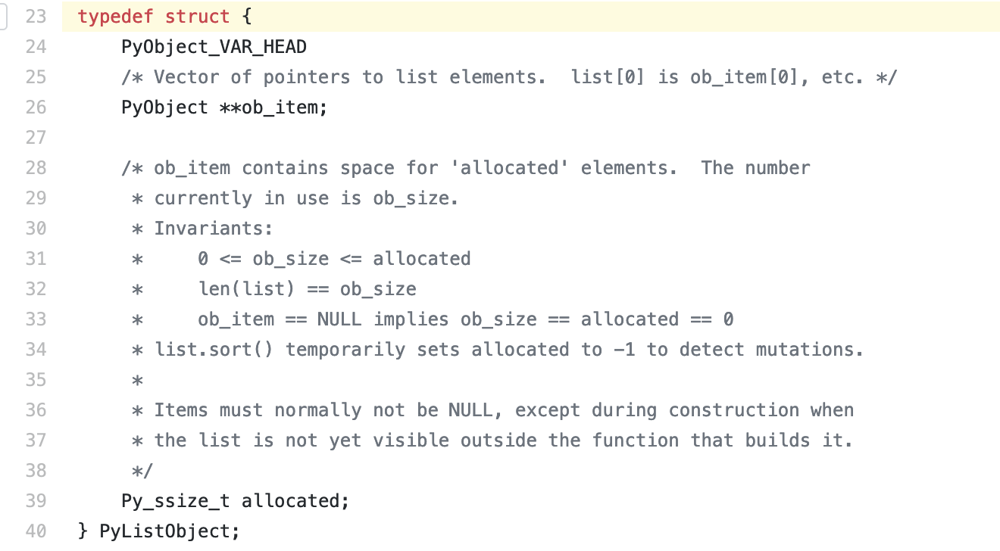
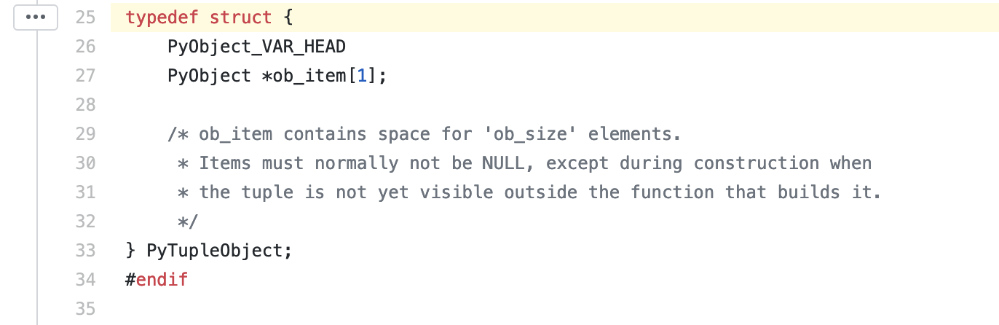
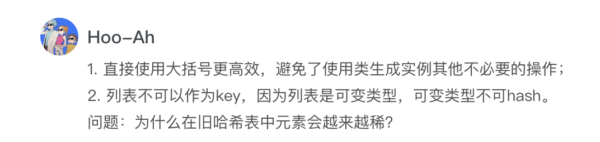
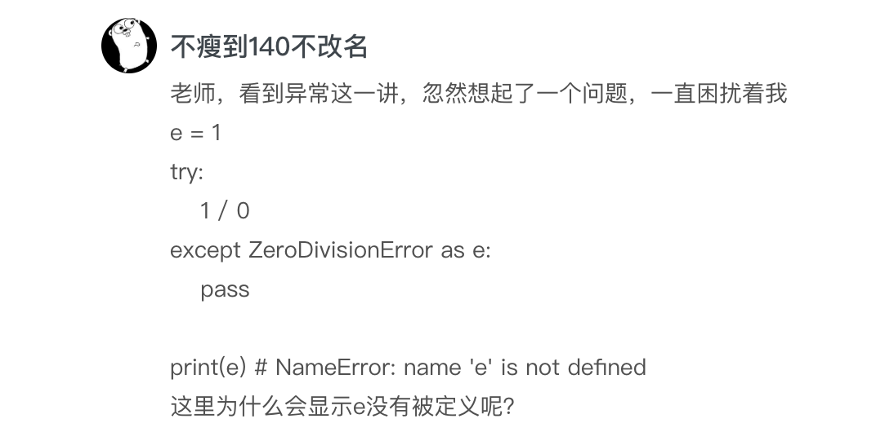
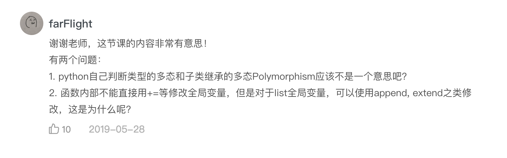

- 00 开篇词 从工程的角度深入理解Python.md
- 01 如何逐步突破，成为Python高手？.md
- 02 Jupyter Notebook为什么是现代Python的必学技术？.md
- 03 列表和元组，到底用哪一个？.md
- 04 字典、集合，你真的了解吗？.md
- 05 深入浅出字符串.md
- 06 Python “黑箱”：输入与输出.md
- 07 修炼基本功：条件与循环.md
- 08 异常处理：如何提高程序的稳定性？.md
- 09 不可或缺的自定义函数.md
- 10 简约不简单的匿名函数.md
- 11 面向对象（上）：从生活中的类比说起.md
- 12 面向对象（下）：如何实现一个搜索引擎？.md
- 13 搭建积木：Python 模块化.md
- 14 答疑（一）：列表和元组的内部实现是怎样的？.md
- 15 Python对象的比较、拷贝.md
- 16 值传递，引用传递or其他，Python里参数是如何传递的？.md
- 17 强大的装饰器.md
- 18 metaclass，是潘多拉魔盒还是阿拉丁神灯？.md
- 19 深入理解迭代器和生成器.md
- 20 揭秘 Python 协程.md
- 21 Python并发编程之Futures.md
- 22 并发编程之Asyncio.md
- 23 你真的懂Python GIL（全局解释器锁）吗？.md
- 24 带你解析 Python 垃圾回收机制.md
- 25 答疑（二）：GIL与多线程是什么关系呢？.md
- 26 活都来不及干了，还有空注意代码风格？！.md
- 27 学会合理分解代码，提高代码可读性.md
- 28 如何合理利用assert？.md
- 29 巧用上下文管理器和With语句精简代码.md
- 30 真的有必要写单元测试吗？.md
- 31 pdb & cProfile：调试和性能分析的法宝.md
- 32 答疑（三）：如何选择合适的异常处理方式？.md
- 33 带你初探量化世界.md
- 34 RESTful & Socket：搭建交易执行层核心.md
- 35 RESTful & Socket：行情数据对接和抓取.md
- 36 Pandas & Numpy：策略与回测系统.md
- 37 Kafka & ZMQ：自动化交易流水线.md
- 38 MySQL：日志和数据存储系统.md
- 39 Django：搭建监控平台.md
- 40 总结：Python中的数据结构与算法全景.md
- 41 硅谷一线互联网公司的工作体验.md
- 42 细数技术研发的注意事项.md
- 43 Q&A：聊一聊职业发展和选择.md
- 加餐 带你上手SWIG：一份清晰好用的SWIG编程实践指南.md
- 结束语 技术之外的几点成长建议.md
14 答疑（一）：列表和元组的内部实现是怎样的？
你好，我是景霄。
转眼间，专栏上线已经一个月了，而我们也在不知不觉中完成了第一大章基础篇的学习。我非常高兴看到很多同学一直在坚持积极地学习，并且留下了很多高质量的留言，值得我们互相思考交流。也有一些同学反复推敲，指出了文章中一些表达不严谨或是不当的地方，我也表示十分感谢。
大部分留言，我都在相对应的文章中回复过了。而一些手机上不方便回复，或是很有价值很典型的问题，我专门摘录了出来，作为今天的答疑内容，集中回复。
问题一：列表和元组的内部实现
第一个问题，是胡峣同学提出的，有关列表（list）和元组（tuple）的内部实现，想知道里边是linked list 或array，还是把array linked一下这样的方式？
关于这个问题，我们可以分别从源码来看。
先来看 Python 3.7 的list源码。你可以先自己阅读下面两个链接里的内容。
listobject.h：https://github.com/python/cpython/blob/949fe976d5c62ae63ed505ecf729f815d0baccfc/Include/listobject.h#L23
listobject.c: https://github.com/python/cpython/blob/3d75bd15ac82575967db367c517d7e6e703a6de3/Objects/listobject.c#L33
我把 list的具体结构放在了下面：

可以看到，list本质上是一个over-allocate的array。其中，ob_item是一个指针列表，里面的每一个指针都指向列表的元素。而 allocated则存储了这个列表已经被分配的空间大小。
需要注意的是，allocated 与列表实际空间大小的区别。列表实际空间大小，是指len(list)返回的结果，即上述代码注释中的ob_size，表示这个列表总共存储了多少个元素。实际情况下，为了优化存储结构，避免每次增加元素都要重新分配内存，列表预分配的空间allocated往往会大于ob_size（详见正文中的例子）。
所以，它们的关系为：allocated >= len(list) = ob_size。
如果当前列表分配的空间已满（即allocated == len(list)），则会向系统请求更大的内存空间，并把原来的元素全部拷贝过去。列表每次分配空间的大小，遵循下面的模式：
0, 4, 8, 16, 25, 35, 46, 58, 72, 88, ...
我们再来分析元组。下面是Python 3.7 的tuple源码，同样的，你可以先自己阅读一下。
tupleobject.h： https://github.com/python/cpython/blob/3d75bd15ac82575967db367c517d7e6e703a6de3/Include/tupleobject.h#L25
tupleobject.c：https://github.com/python/cpython/blob/3d75bd15ac82575967db367c517d7e6e703a6de3/Objects/tupleobject.c#L16
同样的，下面为tuple的具体结构：

你可以看到，它和list相似，本质也是一个array，但是空间大小固定。不同于一般array，Python的tuple做了许多优化，来提升在程序中的效率。
举个例子，当tuple的大小不超过20时，Python就会把它缓存在内部的一个free list中。这样，如果你以后需要再去创建同样的tuple，Python就可以直接从缓存中载入，提高了程序运行效率。
问题二：为什么在旧哈希表中，元素会越来越稀疏？
第二个问题，是Hoo同学提出的，为什么在旧哈希表中，元素会越来越稀疏？

我们可以先来看旧哈希表的示意图：
--+-------------------------------+
| 哈希值 (hash) 键 (key) 值 (value)
--+-------------------------------+
0 | hash0 key0 value0
--+-------------------------------+
1 | hash1 key1 value1
--+-------------------------------+
2 | hash2 key2 value2
--+-------------------------------+
. | ...
__+_______________________________+
你会发现，它是一个over-allocate的array，根据元素键（key）的哈希值，来计算其应该被插入位置的索引。
因此，假设我有下面这样一个字典：
{'name': 'mike', 'dob': '1999-01-01', 'gender': 'male'}
那么这个字典便会存储为类似下面的形式：
entries = [
['--', '--', '--']
[-230273521, 'dob', '1999-01-01'],
['--', '--', '--'],
['--', '--', '--'],
[1231236123, 'name', 'mike'],
['--', '--', '--'],
[9371539127, 'gender', 'male']
]
这里的’---‘，表示这个位置没有元素，但是已经分配了内存。
我们知道，当哈希表剩余空间小于1/3时，为了保证相关操作的高效性并避免哈希冲突，就会重新分配更大的内存。所以，当哈希表中的元素越来越多时，分配了内存但里面没有元素的位置，也会变得越来越多。这样一来，哈希表便会越来越稀疏。
而新哈希表的结构，改变了这一点，也大大提高了空间的利用率。新哈希表的结构如下所示：
Indices
----------------------------------------------------
None | index | None | None | index | None | index ...
----------------------------------------------------
Entries
--------------------
hash0 key0 value0
---------------------
hash1 key1 value1
---------------------
hash2 key2 value2
---------------------
...
---------------------
你可以看到，它把存储结构分成了Indices和Entries这两个array，而’None‘代表这个位置分配了内存但没有元素。
我们同样还用上面这个例子，它在新哈希表中的存储模式，就会变为下面这样：
indices = [None, 1, None, None, 0, None, 2]
entries = [
[1231236123, 'name', 'mike'],
[-230273521, 'dob', '1999-01-01'],
[9371539127, 'gender', 'male']
]
其中，Indices中元素的值，对应entries中相应的索引。比如indices中的1，就对应着entries[1]，即’'dob': '1999-01-01'‘。
对比之下，我们会清晰感受到，新哈希表中的空间利用率，相比于旧哈希表有大大的提升。
问题三：有关异常的困扰
第三个问题，是“不瘦到140不改名”同学提出的，对“NameError”异常的困惑。这是很常见的一个错误，我在这里也解释一下。

这个问题其实有点tricky，如果你查阅官方文档，会看到这么一句话”When an exception has been assigned using as target, it is cleared at the end of the except clause. ”
这句话意思是，如果你在异常处理的except block中，把异常赋予了一个变量，那么这个变量会在except block执行结束时被删除，相当于下面这样的表示：
e = 1
try:
1 / 0
except ZeroDivisionError as e:
try:
pass
finally:
del e
这里的e一开始指向整数1，但是在except block结束时被删除了（del e），所以程序执行就会抛出“NameError”的异常。
因此，这里提醒我们，在平时写代码时，一定要保证except中异常赋予的变量，在之后的语句中不再被用到。
问题四：关于多态和全局变量的修改
最后的问题来自于farFlight同学，他提了两个问题：
- Python自己判断类型的多态和子类继承的多态Polymorphism是否相同？
- 函数内部不能直接用+=等修改全局变量，但是对于list全局变量，却可以使用append、extend之类修改，这是为什么呢?

我们分别来看这两个问题。对于第一个问题，要搞清楚多态的概念，多态是指有多种不同的形式。因此，判断类型的多态和子类继承的多态，在本质上都是一样的，只不过你可以把它们理解为多态的两种不同表现。
再来看第二个问题。当全局变量指向的对象不可变时，比如是整型、字符串等等，如果你尝试在函数内部改变它的值，却不加关键字global，就会抛出异常：
x = 1
def func():
x += 1
func()
x
## 输出
UnboundLocalError: local variable 'x' referenced before assignment
这是因为，程序默认函数内部的x是局部变量，而你没有为其赋值就直接引用，显然是不可行。
不过，如果全局变量指向的对象是可变的，比如是列表、字典等等，你就可以在函数内部修改它了：
x = [1]
def func():
x.append(2)
func()
x
## 输出
[1, 2]
当然，需要注意的是，这里的x.append(2)，并没有改变变量x，x依然指向原来的列表。事实上，这句话的意思是，访问x指向的列表，并在这个列表的末尾增加2。
今天主要回答这些问题，同时也欢迎你继续在留言区写下疑问和感想，我会持续不断地解答。希望每一次的留言和答疑，都能给你带来新的收获和价值。
© 2019 - 2023 Liangliang Lee. Powered by gin and hexo-theme-book.